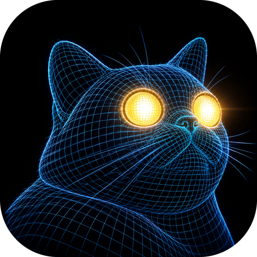
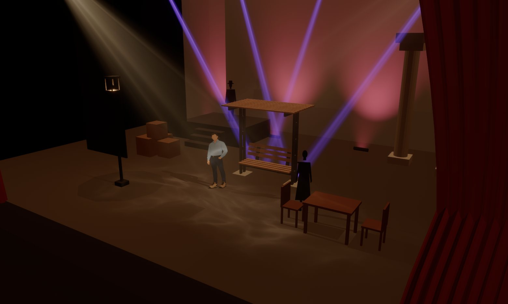
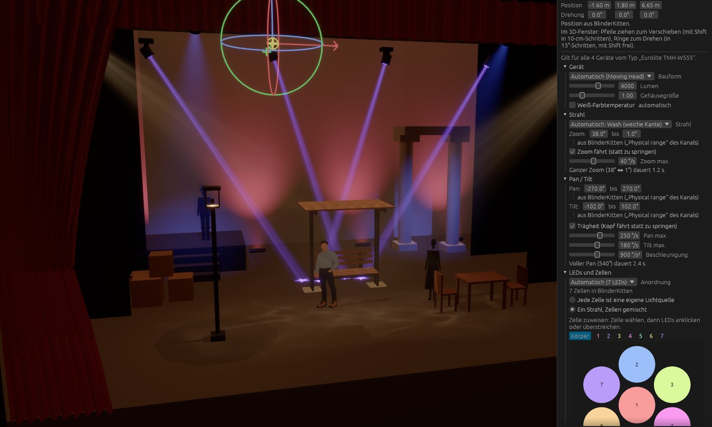
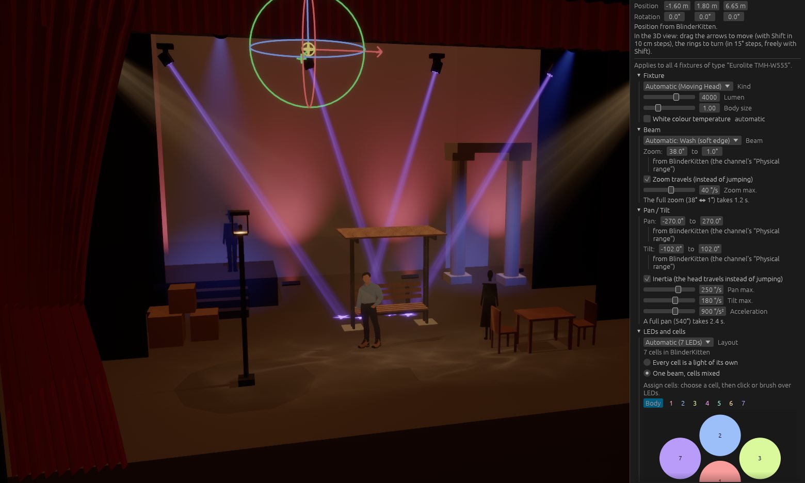

Alles bleibt offen. Alles bleibt live.
Lass IngeTrazo, Tapetum und BlinderKitten einfach nebeneinander laufen. Du speicherst das Bühnenbild – Tapetum zeigt es sofort. Du drehst im Programmer am Dimmer – das Licht ändert sich im selben Moment. Nichts muss exportiert, abgeglichen oder neu geladen werden.
Just keep IngeTrazo, Tapetum and BlinderKitten running side by side. You save the set – Tapetum shows it at once. You turn a dimmer in the programmer – the light changes in the same moment. Nothing has to be exported, synced or reloaded.
IngeTrazo
Du zeichnest das Bühnenbild – Wände, Podeste, Gaze, Möbel.
You draw the set – walls, platforms, gauze, furniture.

Tapetum
Zeigt Licht und Bühnenbild zusammen in 3D, mit Lichtstrahlen im Haze.
Shows light and set together in 3D, with beams in haze.
BlinderKitten
Du programmierst Cues und Effekte, wie gewohnt.
You program cues and effects, as usual.
Einmal einrichten, dann nie wieder: Ein Klick verbindet Tapetum mit deiner Show. Patch und Hardware bleiben unangetastet.
Set up once, then never again: one click connects Tapetum to your show. Patch and hardware stay untouched.

Bühnenbild ändern, Licht sofort prüfen
Rückt eine Wand einen halben Meter nach vorn, fällt der Schatten danach woanders hin – und vielleicht steht die Darstellerin plötzlich im Dunkeln. In Tapetum siehst du das, sobald du in IngeTrazo speicherst.
Move a wall half a metre forward and its shadow falls somewhere else – maybe the actor suddenly stands in the dark. In Tapetum you see it as soon as you save in IngeTrazo.
- Die
.igzwird direkt gelesen – mit Materialien und Texturen - Jedes Teil des Bühnenbilds einzeln ein- und ausblendbar
- Tapetum verändert deine Datei nie
- The
.igzis read directly – with materials and textures - Every part of the set can be shown or hidden on its own
- Tapetum never changes your file


Deine Show ist schon da
Tapetum kennt deine Lampen, Gruppen und Cues aus der Show-Datei – du musst nichts doppelt anlegen. Was du in BlinderKitten programmierst, siehst du sofort auf der Bühne. Und wenn du in Tapetum eine Lampe an ihren Platz ziehst, landet die Position direkt in BlinderKitten.
Tapetum knows your fixtures, groups and cues from the show file – nothing to set up twice. What you program in BlinderKitten, you see on stage at once. And when you drag a fixture into place in Tapetum, its position goes straight to BlinderKitten.
- Keine Fixture-Bibliothek nötig: Lampen werden an ihren Kanälen erkannt
- Auswahl wie im Pult: Klick auf eine Lampe, Rechtsklick auf ihre Gruppe
- Umbauten folgen automatisch den Cues der Main-Cuelist
- No fixture library needed: fixtures are recognized by their channels
- Selection like on the desk: click a fixture, right-click for its group
- Set changes follow the cues of the main cuelist automatically
Mehr Zeit für das, was auf der Bühne zählt
Bühnenzeit ist knapp und teuer. Mit Tapetum bereitest du das Licht vor, bevor du im Saal stehst – und kommst mit fertigen Stimmungen in die Probe.
Stage time is short and expensive. With Tapetum you prepare the light before you're in the venue – and arrive at rehearsal with finished looks.
Vorbereiten statt im Dunkeln suchen
Stimmungen, Übergänge und ganze Cue-Folgen baust du zu Hause oder im Zug. In der Probe bleibt nur noch das Feintuning.
Build looks, transitions and whole cue sequences at home or on the train. At rehearsal, only the fine-tuning is left.
Sehen, was das Publikum sieht
Lichtstrahlen im Haze, Gobos auf dem Boden, Schatten am Bühnenbild, Licht durch Gaze – aus der Zuschauersicht erkennst du früh, ob eine Stimmung trägt.
Beams in haze, gobos on the floor, shadows on the set, light through gauze – from the audience's view you see early whether a look works.
Umbauten gleich mitdenken
Szenen verschieben oder verstecken Bühnenteile passend zur laufenden Cue. So prüfst du jede Stimmung im richtigen Bild.
Scenes move or hide parts of the set to match the running cue. So you check every look on the right set.
Zeigen statt erklären
Regie, Bühnenbild und Ensemble sehen vorab, wie eine Szene wirken wird – lange bevor das erste Mal das Saallicht ausgeht.
Direction, set design and cast see beforehand how a scene will look – long before the house lights first go down.
Läuft auch auf dem Laptop
Von integrierter Grafik bis zur starken Grafikkarte: Drei Qualitätsstufen, und läuft es zu langsam, schlägt Tapetum selbst eine passende vor.
From integrated graphics to a strong graphics card: three quality levels, and if it runs too slowly, Tapetum suggests a better one by itself.
Frei, lokal, ohne Konto
Kostenlos und quelloffen. Keine Cloud, kein Tracking – deine Shows und Bühnenbilder bleiben auf deinem Rechner.
Free and open source. No cloud, no tracking – your shows and sets stay on your computer.
In wenigen Minuten startklar
Die Seitenleiste von Tapetum führt dich durch die Einrichtung. Die ausführliche Anleitung mit allen Schritten findest du auf einer eigenen Seite.
Tapetum's sidebar walks you through the setup. The detailed guide with every step is on a page of its own.
Ganz offen: mit KI programmiert
Tapetum ist vollständig „vibecoded“: Jede Zeile Code hat Claude (Anthropic) geschrieben – beschrieben, geprüft, verworfen, nachgeschärft und im Theateralltag ausprobiert von Julius B. Müller. Das Logo hat ChatGPT generiert.
So entstand in kurzer Zeit ein Werkzeug, das es sonst nicht gäbe. Der Quelltext ist offen – schau gern hinein.
Tapetum is entirely “vibe-coded”: every line of code was written by Claude (Anthropic) – described, checked, thrown out, sharpened and tried out in everyday theatre work by Julius B. Müller. The logo was generated by ChatGPT.
That way a tool came about in a short time that wouldn't exist otherwise. The source is open – feel free to have a look.
Tapetum herunterladen
Version 1.0.0 · frei unter der MIT-Lizenz · getestet mit BlinderKitten 1.0.1b98 und IngeTrazo 0.5.7
Version 1.0.0 · free under the MIT License · tested with BlinderKitten 1.0.1b98 and IngeTrazo 0.5.7
Ältere Versionen gibt es auf der Release-Seite.
Hinweis: Die Software ist nicht signiert
macOS zeigt beim ersten Start eine Gatekeeper-Warnung. So öffnest du Tapetum trotzdem:
Systemeinstellungen → Datenschutz & Sicherheit → nach unten scrollen → „Trotzdem öffnen“
Windows SmartScreen zeigt eine Warnung. Klicke auf „Weitere Informationen“ → „Trotzdem ausführen“. Das erscheint nur beim ersten Start. Fragt die Firewall, eingehendes UDP auf Port 6454 erlauben – darüber kommt das Licht von BlinderKitten.
AppImage ausführbar machen und starten:
chmod +x Tapetum-linux-x64.AppImage ./Tapetum-linux-x64.AppImage
Das Apple Developer Program kostet 99 $ im Jahr, ein Zertifikat für Windows ähnlich viel. Da Tapetum kostenlos ist, verzichten wir darauf. Die Warnung bedeutet nicht, dass die Software schädlich ist – Apple und Microsoft haben schlicht keine Gebühr erhalten. Der Quelltext und die Build-Pipeline, aus der jedes Paket entsteht, sind öffentlich auf GitHub.
Die Software wird „wie besehen“ (as is) bereitgestellt. Es werden keine Garantien gegeben und keine Haftung für Schäden übernommen, die durch die Nutzung der Software entstehen.